ID20012(A) · Design Studio 1
KAIST
Tag Fortune
What if a card reader told your fortune? 카드 리더기로 운세를 볼 수 있다면?
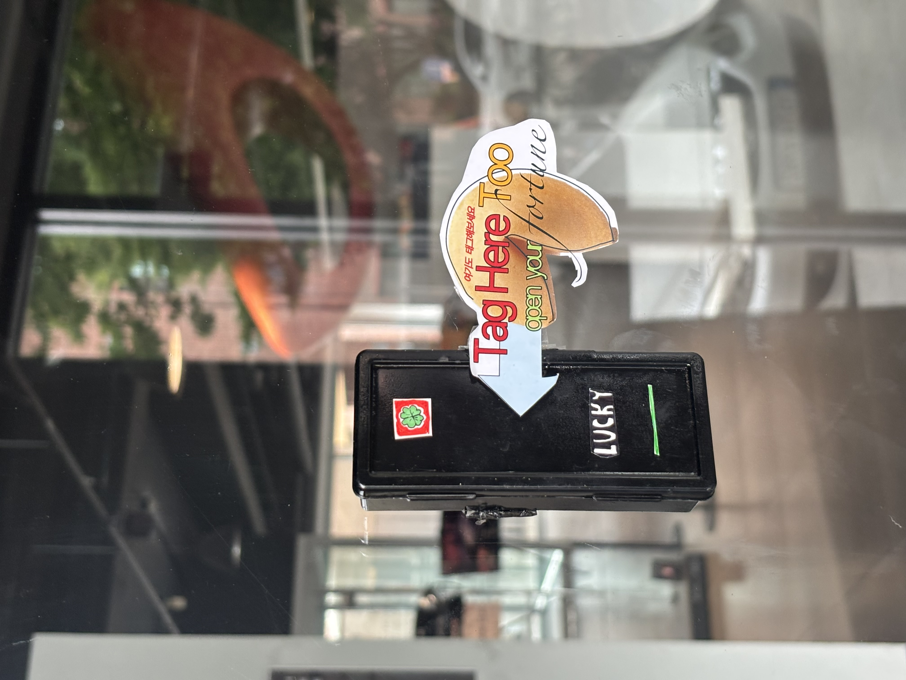
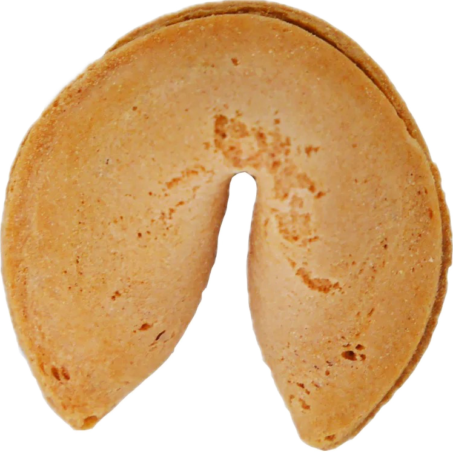
About
A fake NFC card reader installed at the KAIST ID building entrance. This project started from a question: when are people in daily life forced to put down their phones? If you can catch that moment, wouldn't it be easier to nudge them toward a different interaction?
The two interaction points identified inside the ID building were: tapping an ID card to enter, and pressing the elevator button. Starting with the entrance, the idea became an object that looks just like a real card reader — but leads students who tap their phone to enter toward a fortune cookie page instead.
Q. Why fortune?
A. Inspired by NFC fortune keyrings.
NFC-based fortune keyrings have proven genuinely popular — people carry them and check a freshly generated fortune each day. The premise that people are interested in their own fortune was treated as already validated, and the project built from there.
When the fake card key is tapped, the embedded NFC tag redirects the user to a fortune cookie website. The site is kept as simple as possible — a single screen styled after the slip inside a fortune cookie, so users can engage without any friction.
Each NFC tag carries a unique token, so a new fortune only appears by tapping again — not by refreshing. Visit counts to the main page are tracked to measure the project's reach.
KAIST ID 건물 입구에 설치한 가짜 NFC 카드 리더기입니다.
이 프로젝트는 일상생활에서 늘 핸드폰만을 보고 있는 사람들이 언제 강제로 폰을 못 보게 되는가? 그 때를 노리면 다른 행동을 유도하는 것이 쉽지 않을까? 하는 생각에서 시작되었습니다. 해당 관점에서 찾은 산업디자인과 건물 내의 interaction 포인트는 건물 출입을 위해 ID카드를 클릭할 때와, 엘리베이터 버튼을 클릭할 때 이렇게 2개였습니다.
그 중에서도 먼저 출입문에 대해서 생각해보았습니다. "어떻게 하면 재미있는 상호작용을 유도할까?" 하여 떠올린 것이, 카드키를 태그해야 하는 카드 리더기와 완벽하게 같지만 조금 다른 상호작용을 만드는 오브젝트였습니다. 핸드폰으로 모바일 학생증 카드를 태그해 들어오는 학생들에게 이 오브젝트도 태그해 보도록 유도하고, 포춘쿠키를 여는 것과 같이 오늘의 운세 페이지를 보여줍니다.
Q. 왜 하필 운세인가요?
A. 운세 키링에서 아이디어를 얻었습니다.
시중에 나오는 NFC태깅을 이용한 운세 키링은 실제로 많은 인기를 끌었습니다. 사용자들이 해당 키링을 가지고 다니며, 매일마다 생성되는 다른 운세를 확인합니다. 사람들이 본인의 운세를 보는 것에 관심을 가진다는 가설은 이미 검증되었다고 간주하고 해당 프로젝트를 시작하였습니다.
핸드폰으로 해당 가짜 카드키를 태그하였을 때, 내부의 NFC 태그가 사용자를 포춘쿠키 웹사이트로 이동시킵니다.
해당 웹사이트는 포춘쿠키 속 쪽지를 그대로 옮겼습니다. 최대한 심플하게, '포춘쿠키 안의 쪽지'의 디자인을 따라 해당 쪽지가 나타나는 단일 화면으로만 구성하여, 사용자가 부담 없이 이용할 수 있도록 했습니다.
NFC 태그마다 고유 토큰이 부여되어, 사용자가 굳이 url의 해쉬값을 바꾸지 않는 한 다시 태깅해야지만 새로운 운세를 볼 수 있도록 하였습니다. 메인 페이지로 진입하는 방문자수를 트래킹하여 이 프로젝트의 효과를 측정할 수 있도록 하였습니다.
Location위치
KAIST ID building entranceKAIST ID 건물 입구
Interaction인터랙션
Fake card reader tap → Fortune Cookie slip (fortune + lucky color)가짜 카드 리더기 태그 → 포춘쿠키 쪽지 (운세 + 행운 색상)
Installation Period설치 기간
2026. 6. 4 — 6. 11
Stack
Next.js · Upstash Redis · Vercel
Project Details
The original concept was a gold bar-shaped fake card reader.
To avoid making it too identical to the real one, the initial design went with a yellow version — same shape, different color. However, after actually painting it with lacquer, the yellow product made it hard to see the connection to the real card reader, and the fun of "same reader, different interaction" was lost. Black was adopted instead.
Painted with black lacquer, the text "CARD" was clumsily replaced with "LUCKY," and the red Sesco-style label on top was reworked into a four-leaf clover.
처음 아이디어는 골드바 모양의 가짜 카드 리더기였습니다.
실제 카드 키와 너무 비슷하게 만들면 혼동을 줄 것 같아, 기존 리더기의 모양을 하고 있으나 색이 다른 노란색 가짜 카드 리더기를 구상했습니다.
그러나, 실제로 락커로 색깔을 칠해보고 나니 노란색의 프로덕트는 원래의 카드 리더기와의 유사성을 설명하기 힘들었을 뿐더러, '같은 카드 리더기지만 다른 상호작용을 하네?'하는 데에서 오는 재미가 없다고 판단했습니다. 이에 검은색을 채택하였습니다.
검은 락커로 칠하고, 조금 어설픈 글씨로 CARD의 글씨를 LUCKY로 바꾸었고, 위의 '세스코'에 해당하는 빨간색 라벨은 네잎클로버를 그려 변형했습니다.
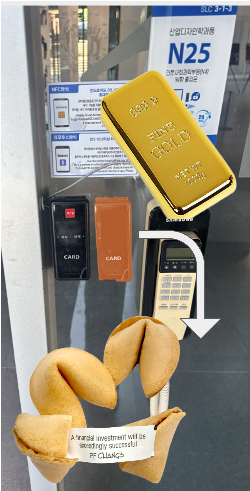
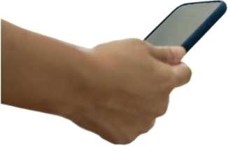
Pre-installation설치 전 준비
Materials재료
-
Plastic mini transparent case
- bought from Coupang with similar size 플라스틱 미니 투명 케이스 - 쿠팡에서 비슷한 크기로 구매 - NFC tag NFC 태그
- Lacquer spray (black/yellow) 락커 스프레이 (검정/노랑)
- Paper 종이
Measured the dimensions of the real reader to find a case with a similar size. After acquiring one, the painting process began. Tested yellow first — but switched to black to better match the look of the real scanner.
비슷한 크기의 플라스틱 케이스를 구매하기 위해 사이즈를 측정했습니다.
그 후 채색 작업을 거쳤습니다. 처음엔 노란색을 시도했지만 실제 리더기와 비슷하게 만들기 위하여 검정색으로 선택했습니다.
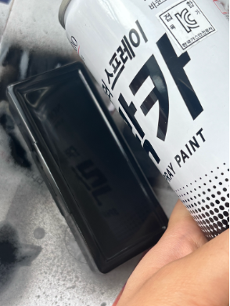
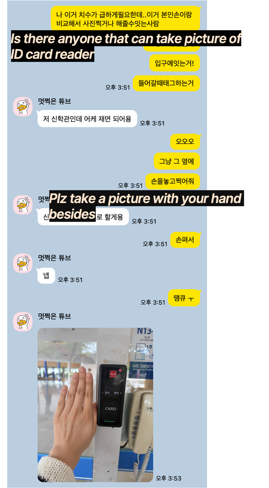
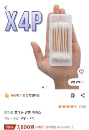
Development개발
- Next.js + TypeScriptNext.js + TypeScript
- Upstash Redis — visit trackingUpstash Redis — 방문자 추적
- Deployed on VercelVercel 배포
Hash-based URL routing prevents new fortune reveals from simple refreshes. Each NFC tap redirects to a unique token endpoint — same token always shows the same fortune. Visit counts tracked via Redis NX flag to avoid double-counting. 해시 기반 URL로 새로고침 시 새 운세가 나오는 것을 방지합니다. NFC 태그 시 고유 토큰 엔드포인트로 이동하며, 같은 토큰은 항상 같은 운세를 보여줍니다. Redis NX 플래그로 중복 카운트 없이 방문자를 추적합니다.
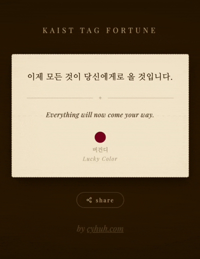
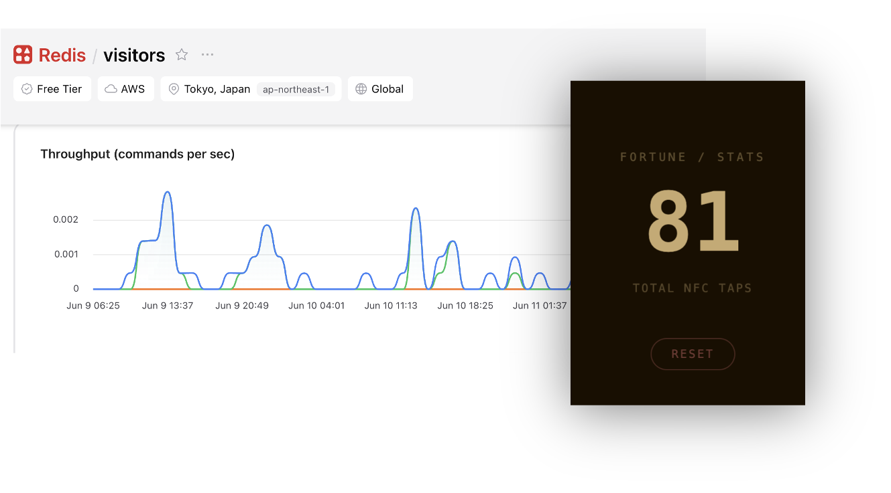
Redis statsRedis 방문 통계
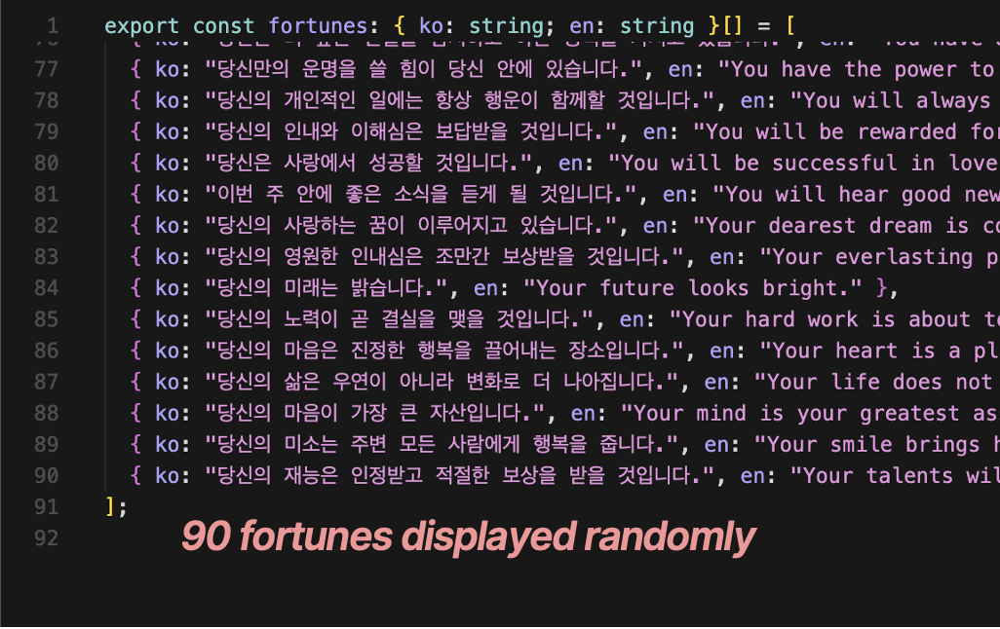
Beside the entrance of ID building산업디자인과 건물 입구 옆
Installed slightly away from the real scanner to avoid being mistaken for it. Interaction was highest on the first day and gradually declined after. Since students already tap their phones to enter, the barrier to one more tap was low — the result was more visitors than expected.
실제 카드 리더기로 오해하지 않도록 입구에서 약간 떨어뜨려 설치했습니다.
첫날 설치하였을 때 인터랙션이 가장 많았고 이후 점차 감소했습니다.
이미 폰으로 태그하는 습관이 있어 추가 인터랙션의 진입 장벽이 낮아서인지,
기대보다 많은 방문자수가 발생했습니다.

Installation at site설치 현장
Taps / half-day반일별 태그 수
Cumulative누적
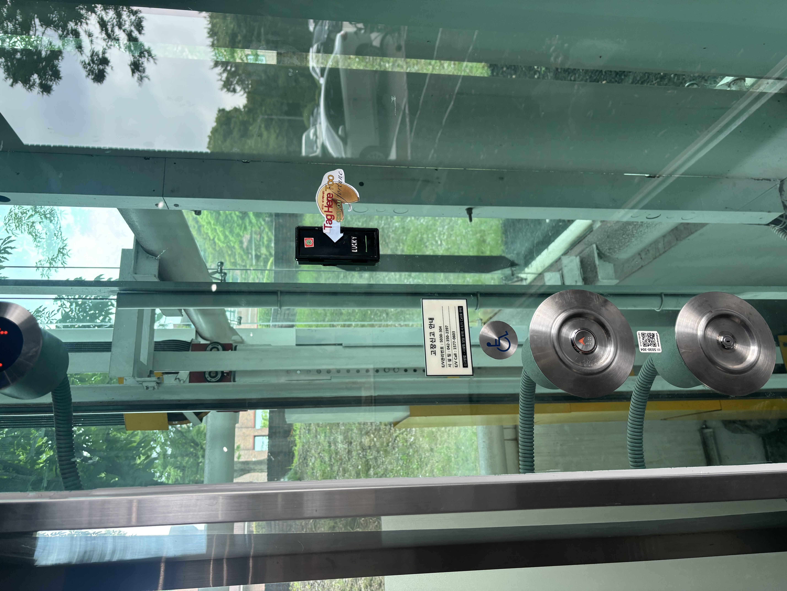
Elevator button panel엘리베이터 버튼 위 설치
On the elevator button panel at ID building산업디자인과 건물 엘리베이터 버튼 위
Relocated based on a suggestion that the elevator position might attract more interactions — running it as a second experiment. The count didn't increase significantly. The pool of people using the building is fairly fixed, and many had already encountered the object in Phase 1, making a direct comparison difficult.
엘리베이터 버튼 위가 더 유리할 것이라는 제안을 받아 위치를 옮겨 2차 실험을 진행해보았습니다. 인터랙션 수는 크게 늘지 않았습니다. 해당 건물을 사용하는 사람들은 어느정도 정해져있어 Phase 1에서 이미 해당 오브젝트를 인식한 사람이 많았고, 직접 비교가 어려웠습니다.
Taps / half-day반일별 태그 수
Cumulative누적
Phase 1 + Phase 2 combined전체 기간 합산
Cumulative — Phase 1 vs Phase 2Phase 1 · Phase 2 누적 비교
Conclusion
60 visits over 8 days. Making people adopt a new behavior was expected to be very difficult — but people found more fun in it than anticipated, and didn't hesitate much to try a new interaction. 8일간 총 60번의 방문이 이루어졌습니다. 새로운 행동을 하게 만들기 굉장히 어렵겠다고 예상했는데, 사람들이 생각보다 재미를 느꼈고 새로운 인터랙션을 하는 데에 크게 망설이지 않았습니다.
This connects to the zero-friction principle. Embedding the interaction inside an existing routine (tapping in to enter the building) nearly eliminated the barrier to participation. Those who understood the context saw the "fake card reader" not as an obstruction, but as a fun, event-like product. 이것을 제로 프릭션 원칙과 연관지을 수 있습니다. 기존 루틴(태그하고 입장) 안에 인터랙션을 넣어 참여 장벽을 거의 없애려고 하였습니다. 맥락을 이해한 사람들은 "가짜 카드 리더기"라는 설정을 방해물이 아닌 재미있는 이벤트성 프로덕트로 받아들였습니다.
To drive continued engagement beyond the first encounter, there needs to be a reason to return. It would be interesting to experiment with making the site more compelling — encouraging people to make this tagging action a part of their daily building entry routine. 처음 한 번의 인식과 사용 후에도 지속적인 참여를 유도하려면 다시 찾아올 이유가 필요합니다. 본인의 건물 출입 루틴에 해당 태깅 액션을 추가할 수 있도록 사이트를 더 매력적으로 만들어 실험해봐도 재미있을 것 같습니다.